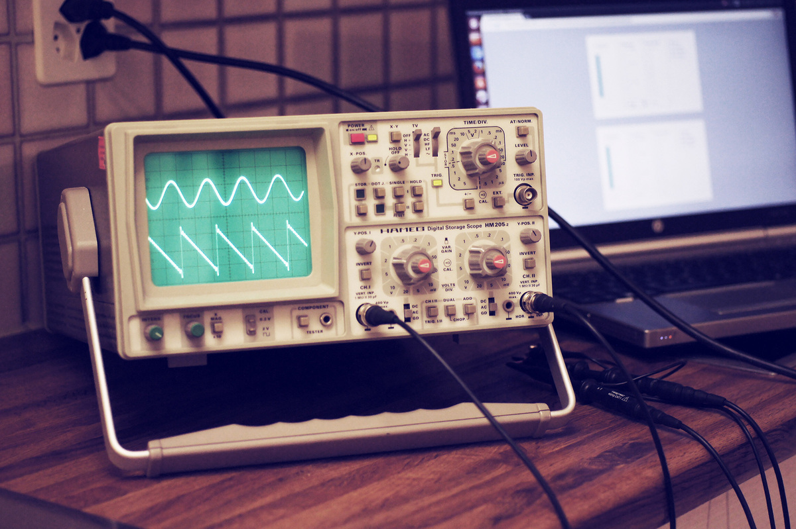

HTML Function Generator

Instead of using a real (electronic test equipment) function generator, I created one for the browser.
It sends sine, square, sawtooth and triangle waveforms to the audio output of the computer. There are two generators, one goes to the left and the other goes to the right channel.
By attaching a stereo cable to the headphone jack or using audio routing software, the signal can be used as input for any application. Because it uses audio output, the frequency range is rather limited and also the filtering circuitry prevents crisp squarewaves at high frequecies.
I created it mainly to play around with lissajous patterns on my oscilloscope and generate test input data for my audio visualizer software and for that it works fine.
You can download it from my Github Repository: